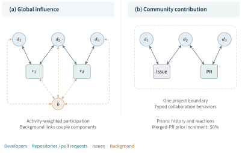
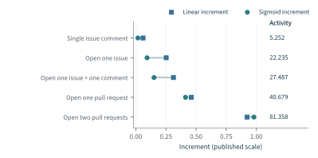
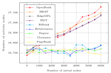
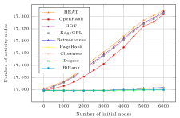
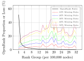
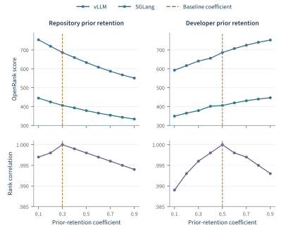

Activity records participation; a collaboration network records how that participation connects people and projects. A developer who resolves issues across a community and a developer who submits a substantial, self-contained change may both contribute important work. Their positions in the collaboration network can nevertheless differ. The same distinction applies to repositories: similar volumes of activity can arise from very different contributor populations and connections to the wider ecosystem. Relational evaluation begins with these differences.
This chapter develops OpenRank at three connected levels. The general algorithm allocates importance through a weighted network while retaining node-specific prior information. G-OpenRank instantiates that algorithm for developers and repositories across an observed ecosystem. C-OpenRank instantiates it for contributions within a community, retaining issues and pull requests as collaboration units. The two models share a mathematical foundation, but their boundaries, priors, and evaluative purposes differ.
The account draws primarily on the OpenRank algorithm study, the OpenDigger framework, and the OpenRank Leaderboard study, supported by the doctoral research in which these methods were developed and examined (Han et al., 2026a; Wang et al., 2026; Zhao et al., 2024; Zhao, 2025; Xia, 2024). We first establish the representation and algorithm, then derive the two evaluation models and examine their published evidence. The purpose is to explain how the method works, what its experiments establish, and how its use advances the framework of Open Source Evaluatology. Chapter 4 supplies the measurement procedures that generate the relations. Chapter 6 takes the resulting models into the data infrastructure and deployments through which they become a continuing evaluation practice.
5.1 From Collaboration to Relational Evaluation#
The object of a relational measure#
In this chapter, relational influence means importance allocated through recorded collaboration under a declared propagation model. A score is therefore a property of an object in a network and measurement setting. It is not an intrinsic property of the object alone. The evaluation question , introduced in Equation 1.1, determines the objects, conditions, reference, time, stakeholders, and purpose for which this allocation is informative.
Centrality offers several distinct interpretations of position. Degree, closeness, and betweenness describe immediate connectivity, distance, and mediation along paths, respectively (Freeman, 1979). Recursive measures instead make importance depend on the importance of connected objects. Attenuated indirect influence appears in Katz’s status index; HITS distinguishes mutually reinforcing hub and authority roles; personalized PageRank combines graph propagation with an external source of importance (Katz, 1953; Kleinberg, 1999; Gleich, 2015). BiRank extends ranking with prior information to bipartite graphs (He et al., 2017). These are the mathematical antecedents against which OpenRank’s contribution should be understood.
OpenRank brings together weighted collaboration, heterogeneous node dependence on prior information, and recurring measurement of an evolving community. The substantive contribution lies in the resulting evaluation models and their connection to empirical open source work, as well as in the general algorithm. The choice of flow matters: a centrality is meaningful in relation to the process its paths and transfers represent (Borgatti, 2005). In OpenRank, the calculation propagates modeled importance through collaboration. It does not establish that each traversed edge transmitted knowledge, caused adoption, or improved software quality.
This distinction preserves the separation among activity, artifacts, capability, and outcomes developed in Part I. It also clarifies what a network adds to Chapter 4. An activity total discards the identities and relationships behind that total. Relational evaluation retains some of this structure and asks how it changes the allocation of importance. The resulting score complements the activity measure; its suitability is judged against the intended evaluation task.
From projected relations to typed networks#
An earlier construction in the OpenDigger research projects developer–repository participation onto a repository network (Zhao, 2025, Section 3.5). Let be the historical linear activity of developer in repository . For two repositories sharing active developers, the reported projected weight is
Each summand is half the harmonic mean of the two activity values. The formula retains the source’s scale. A developer active in only one repository contributes no cross-repository link; a developer active in both connects them with a weight limited by the smaller participation value. Weighted ranking can then operate on the projected repository graph.
Projection makes the relationship between repositories explicit, but removes the developer nodes through which it was formed. G-OpenRank retains both types of object and calculates their scores jointly. C-OpenRank changes the boundary again: its collaboration units are the issues and pull requests inside a project. Figure 5.1 shows the two constructions. A local contribution score is thus not obtained by taking a subset of a global ranking. It answers a different question using a different graph.

Formally, write , with node types , relation types , and nonnegative weights . Developer–repository–developer paths represent shared project participation; developer–pull request–developer paths retain a particular collaboration unit. The importance of such typed paths is also explicit in heterogeneous-network methods such as PathSim (Sun et al., 2011). Here, their semantics determine which forms of collaboration the ranking can express.
Every activity-weighted edge inherits the specification of Equation 4.1: eligible behaviors, attribution, identity resolution, bot policy, weights, and time aggregation. A monthly square root, a sum of daily square roots, and a historical linear total can produce different edge proportions. They must not be substituted for one another merely because each is called Activity. Keeping this lineage is the first condition for interpreting a later OpenRank score.
5.2 The OpenRank Algorithm#
Normalize the direction of transfer#
For a weight on the directed relation from source to destination , define
Column distributes the outgoing importance of node ; row collects incoming importance at node . The product is therefore an incoming aggregation. Although collaboration links may be represented in both directions, normalization can give the two directed transfers different proportions because their source nodes have different total outgoing weight.
For a source with no outgoing weight, Equation 5.2 requires an explicit convention. A background connection or a redistribution vector can preserve a column sum of one. Leaving the column zero instead produces a column-substochastic matrix, with nonnegative entries and column sums at most one. The proof below covers both cases. They remain different models of unallocated importance.
Aggregate heterogeneous relations explicitly#
Several behavior types can connect the same two objects. Let denote the weight for relation type , and let encode its importance. Aggregating these relations before normalization gives
This construction makes behavioral weights part of the propagation proportions. Multiplying every by one positive constant leaves unchanged. Altering their ratios generally changes it.
The heterogeneous-edge reduction in the algorithm paper also admits a mixture of already normalized relation channels (Han et al., 2026a, Section 3.1.4). If each is column-stochastic and the nonnegative channel coefficients sum to one, then is column-stochastic. The two constructions need not coincide: aggregating raw behavior weights makes a source’s allocation depend on its observed volume in each channel, whereas mixing normalized channels can assign each available channel a prescribed share. Missing channels require a declared redistribution or leakage rule. Specifying the order of weighting and normalization therefore forms part of the model, not merely its implementation.
Separate the prior from the numerical starting point#
Let be a fixed prior vector for the measurement window. Let , where measures node ’s dependence on incoming structural evidence. The scalar OpenRank recurrence is
This is the formulation of Han et al. (2026a), with notation that distinguishes the prior from the solver’s initial iterate . A previous month’s score can supply either, but the two roles are different. Changing a fixed prior changes the target solution. Changing only the numerical start changes the path to that solution.
The complementary coefficient is the prior-retention coefficient. Some descriptions and implementation parameters use this complementary convention. In the public implementation, the update combines retentionFactor times the node’s initial value with one minus that factor times incoming messages (X-lab, 2023). Thus a repository retention of corresponds to structural dependence , not . We use for structural dependence and for prior retention throughout this chapter.
The model does not assume that a prior is an intrinsic value independent of observation. It may encode historical scores or a declared activity-based contribution. Calling it a prior identifies its mathematical role. Its empirical justification must come from the construction of the measure and the intended use.
A unique, nonnegative solution#
Write , , and . If is nonnegative and column-substochastic, then
Consequently the spectral radius of is less than one, and the iteration converges from any finite starting vector to
To see this directly, subtract the fixed-point equation from the recurrence. The difference after steps is , whose 1-norm is at most . It tends to zero. Each term of the series in Equation 5.6 is nonnegative when the prior is nonnegative, establishing nonnegativity of the solution as well as uniqueness.
The series provides an interpretation of the score. The zeroth term supplies retained prior information. The next term transfers it once through the graph. Later terms represent successively longer walks, attenuated at the destination of each step by the relevant structural-dependence coefficient. OpenRank thereby combines immediate evidence and indirect relational context. Repeated visits are permitted by the algebra; this is a walk-based allocation, not an enumeration of distinct independent contributions.
When , is column-stochastic, and sums to one, Equation 5.4 has the familiar personalized PageRank form (Gleich, 2015). Setting all coefficients to one would instead remove the external source term and the strict contraction guarantee. That undamped limit should not be confused with conventional damped PageRank.
For heterogeneous coefficients, the total score need not sum to the total prior. Multiplying Equation 5.4 by the all-ones row vector does not cancel the incoming and prior-retention terms unless additional conditions hold. A reported OpenRank value should therefore be treated as a score on a declared scale. Normalizing it into a share is a further transformation, with its own denominator and interpretation.
Checks implied by the formulation#
The linear form makes several properties transparent. For fixed and , scaling every prior value by the same positive constant scales every score by that constant and leaves ordering unchanged. Multiplying all outgoing weights of one source node by a positive constant leaves its normalized column unchanged. The latter invariance does not apply to the complete measurement pipeline if the same activity change also alters the prior.
An approximate solution can be assessed without knowing the exact solution. Define its residual as . Equation 5.5 gives
This bound is conservative but explicit. It separates numerical error from uncertainty in graph construction, which a smaller solver tolerance cannot remove. If two scores differ by no more than twice a valid bound on individual score error, their numerical order should not be treated as resolved by the approximation.
The public implementation supplies a useful six-node fixture with three developer nodes and three repository nodes (X-lab, 2023). Using its supplied weights and priors, a direct solution of Equation 5.6 gives, to the source’s three-decimal precision, The source includes columns summing to ; retaining them reproduces the fixture and falls within the substochastic case proved above. Renormalizing those columns would solve a different problem. The accompanying chapter materials independently check this linear-system solution, iterative convergence, and scale covariance. These are numerical consistency checks on an existing software fixture, not new observations of developer performance.
A solver with an explicit stopping rule#
The closed form in Equation 5.6 establishes the solution; it does not require forming an inverse. For a sparse graph, a matrix–vector multiplication and a componentwise update suffice. The following reference procedure makes the numerical contract explicit.
Algorithm 5.1. OpenRank iteration with an error certificate. Given a nonnegative column-substochastic , nonnegative prior , structural coefficients with , tolerance , and a maximum iteration budget:
Set , , and choose a finite initial vector .
Compute and .
If , return with that error certificate. Otherwise replace by and repeat.
If the budget is exhausted, report nonconvergence at the requested tolerance together with the final residual.
The certificate applies to the iterate whose residual was computed. Returning a different vector requires evaluating or bounding its residual. A coordinate that changes little in one round should not be permanently frozen merely on that basis: later incoming changes can move it again. An optimized distributed implementation may use local stopping rules, but a final residual against the full operator supplies a common numerical check.
For represented states and nonzero propagation entries, each sparse iteration costs arithmetic and requires storage. A dense matrix–vector iteration costs , whereas explicitly forming a dense inverse generally entails cubic work. Sparsity, partitioning, communication, and graph preparation determine actual running time. Pregel’s vertex-oriented supersteps provide a natural implementation pattern for sending weighted scores and aggregating incoming messages (Malewicz et al., 2010); they do not remove the need to specify the operator and stopping criterion.
Several dimensions per node#
The scalar recurrence already accommodates different node types. A genuinely multidimensional model goes further by assigning a vector of states to each node. Following the extension proposed in the OpenRank paper, let node have dimensions and define the expanded state space
Stacking the node states in a fixed order produces an -dimensional real vector . Let the real matrix of size describe the allowed transfers between those states, including their attenuation, and let the real vector of length contain retained prior information. Then
Nonnegative and produce a nonnegative fixed point. One sufficient construction is , where is a nonnegative column-substochastic state-transfer matrix and every diagonal entry of is below one. The scalar proof applies directly.
This notation permits different dimensions for different node types without padding them with ambiguous states. A block from node to node has size . When all nodes have the same number of dimensions and structural propagation separates from dimension transfer, a special case is , where is a column-stochastic matrix and the expanded vector has length . A general heterogeneous model need not admit this factorization.
Multilayer network theory provides the broader representation of node states and interlayer relationships (De Domenico et al., 2013). Learned heterogeneous models such as HGT likewise retain type distinctions, but estimate representations through a different objective (Hu et al., 2020). OpenRank’s explicit linear operator makes its propagation and priors inspectable. Its multidimensional extension remains a modeling capability: experiments on scalar G-OpenRank or C-OpenRank do not validate every possible choice of state dimensions and transfer blocks.
5.3 Global Influence across Repositories and Developers#
Joint influence in the ecosystem#
G-OpenRank uses developers and repositories as nodes, with bidirectional weighted links representing observed participation. Its premise is reciprocal: repositories gain importance through participation by influential developers, while developers gain importance through work in influential repositories. The model retains the developer–repository structure instead of projecting it away. The OpenRank study develops this model in detail (Han et al., 2026a, Section 3.2); OpenDigger identifies it as the global network metric (Wang et al., 2026, Section 3.4.1).
The observation boundary is public platform collaboration within each calendar month. In the published model, issue and pull-request work provides the main behavioral evidence; stars and forks are excluded from collaboration intensity, and direct commits are not used as a substitute for the selected pull-based actions. This is a choice of observable work, with consequences for projects that organize their development differently. The word global describes the intended ecosystem scope. It does not turn an observed platform network into a complete census of all open source work.
A background node connects bidirectionally to the developer and repository nodes. The construction is motivated by LeaderRank’s ground node (Lü et al., 2011). It supplies a common connection across otherwise separate components and participates in the allocation of influence. Strict damping already guarantees the fixed point under Section 5.2’s conditions; the background node is therefore a model component whose edge weights and prior affect the result, rather than a mathematical necessity for uniqueness.
Table 5.1 collects the published settings for G-OpenRank and the community model developed next. The table separates model parameters from the common solver. In particular, prior retention is expressed throughout as , avoiding a reversal of meaning when the source uses the complementary damping convention.
| Choice | G-OpenRank | C-OpenRank |
|---|---|---|
| Evaluation object | Developers and repositories in an observed ecosystem | Developer contributions within one community |
| Represented nodes | Developers, repositories, background | Developers, issues, pull requests |
| Relations | Activity-weighted developer–repository collaboration | Typed actions around issues and pull requests |
| Time unit | Calendar month | Calendar month |
| New-node prior | 0 before activity-based increments | 1 before node-specific adjustments |
| Prior retention | Repository 0.30; developer 0.50; background 0.15 | 0.15 for all node types |
| Current evidence | Activity-based developer increments; weighted relations | Behavior-weighted relations; reactions; merged-PR prior increment |
| Historical state | Previous scores; decay and temporal combination described separately | Previous score inherited when available |
| Interpretation | Relational influence across the specified ecosystem | Relational contribution under the community’s recognition model |
History, current evidence, and the numerical start#
The global model assigns newly introduced developer and repository nodes a base prior of zero. Creating an account or repository alone consequently introduces no new influence through that base prior. Current developer activity supplies new influence. Previous scores provide historical information, with prior-retention coefficients of 0.50 for developers and 0.30 for repositories. The asymmetry expresses the modeling judgment that developer influence should persist more strongly than repository influence when current activity changes. The background node uses retention 0.15.
These coefficients act inside the fixed-point calculation. They must be distinguished from the temporal combination reported in the algorithm study,
where is the current result before combination. The study also specifies a multiplier of 0.85 applied in influence decay to repository and developer nodes, including inactive ones. In that convention, 0.85 is the fraction retained by the decay operation, not a loss of 85%.
A fixed-window convergence proof does not establish the behavior of this entire sequence across months. The temporal procedure must additionally specify when history is decayed, when activity is injected, how inactive nodes persist, and when the combination in Equation 5.10 is applied. The published description establishes these ingredients but does not recover every ordering detail of a production release. We therefore retain them as distinct model commitments instead of inventing a single executable update order. The pinned implementation cited in Section 5.2 verifies the inner recurrence and its coefficient convention; it does not by itself verify all temporal operations.
Monthly aggregation is also a substantive temporal choice. It preserves medium-term participation patterns while losing event ordering within the window. As temporal-network research shows, a path in an aggregated graph need not be a time-respecting path in the underlying events (Holme and Saramäki, 2012). G-OpenRank should accordingly be read as monthly relational importance, not as a reconstruction of the chronological route by which ideas or changes spread.
Activity-based influence increments#
Activity has two roles in the global model: it determines relative edge weights, and a transformed activity value supplies a developer’s new influence. Normalization separates their scales. The source uses a sigmoid increment
The calibration starts from a monthly activity third quartile of 88.16 among active developers in 2024, chooses the midpoint at half that value, and sets the increment near 0.99 at the third quartile (Han et al., 2026a, Section 3.2.3). The variable denotes activity on that study’s scale; it is unrelated to the structural-dependence coefficient .
Figure 5.2 preserves all five action profiles in the published comparison. A single issue comment has activity 5.252 in that table; opening two pull requests has activity 81.358. These inputs belong to the historical experiment and are not replaced with the later coefficients or square-root operations examined in Chapter 4. The comparison illustrates how the transformation changes new influence while the underlying action profile remains fixed.

The sigmoid suppresses increments relative to the linear mapping for the first four profiles and approaches its upper range for the fifth. It therefore limits the extent to which increasing a large activity count increases new influence. This is a design response to brief surges of low-intensity participation, not an empirical demonstration that a bounded increment eliminates manipulation. Identity splitting, coordinated interactions, and low-value actions can still change the graph.
The mapping also makes eligibility important: . Applying it only to eligible active developers differs from applying it to every registered account. A reproducible model must state that eligibility rule alongside its calibration population. When the observation or Activity definition changes, the old sigmoid parameters cannot automatically be assumed to express the same participation threshold.
5.4 Contribution within a Community#
Recognizing work around collaboration units#
C-OpenRank asks how a developer participates in the continuing work of one community. Issues and pull requests retain the context in which participants open tasks, discuss problems, review changes, and complete work. The model is developed in the OpenRank Leaderboard study and in the doctoral studies of community sustainability and ecosystem data platforms (Zhao et al., 2024; Xia, 2024; Zhao, 2025). OpenDigger subsequently incorporates the global/community distinction into its metric framework (Wang et al., 2026).
The motivating problem is that repository-level code counts can leave coordination poorly represented. Empirical studies of Apache and Mozilla already distinguished code production from the broader organization of development and problem resolution (Mockus et al., 2002). A community measure should consequently make its definition of contribution explicit. C-OpenRank’s definition emphasizes publicly recorded collaboration and the relationships formed through it. This is especially relevant to work such as answering issues, connecting participants, and reviewing proposed changes.
The original design uses three principles inspired by the Apache Way: public communication supplies observable evidence; authority is earned through participation; and sustained community work matters beyond the quantity of code produced. These principles become concrete modeling choices. Newly appearing nodes receive the same base prior, without a privileged value assigned from an employer or personal attribute. Participants and collaboration units reinforce one another through the network. Community reactions and accepted changes modify the prior information attached to the units.
The project defines the evaluation boundary. The core score-bearing objects are developers, issues, and pull requests. A repository shown as a containment object in a conceptual diagram should not automatically become an additional propagation node. Any deployment that adds such a node, or introduces additional relations, defines a model variant and must declare its transfer rules. This separation allows the collaboration model to remain interpretable as implementations develop.
Historical priors, reactions, and accepted changes#
The published community model runs monthly. A node that already has a preceding-month score inherits it as prior information; a newly appearing node starts with a base prior of one. Issue and pull-request priors are then adjusted by recorded thumbs-up reactions, using the reacting developer’s contribution proportion in the preceding month. The mechanism lets recognition from an established contributor carry more weight than an undifferentiated count of reactions (Zhao et al., 2024, Section 3.3.3).
A pull request merged during the current month receives an additional 50% increase in its prior. The later dissertation describes this increase after the reaction adjustment (Zhao, 2025, Section 6.2.1). The merged-change signal is thus represented in the prior as well as in the collaboration history. It should not be collapsed into the unrelated merged-PR coefficient of an Activity formula. One operates on a node’s retained information; the other weights a measured behavior.
With denoting the normalized community operator and the resulting prior, the inner calculation is
The prior-retention coefficient is 0.15 for every node type. The same convergence argument therefore applies with . Prior construction remains outside this inner solve: the reaction weighting uses historical contribution, not a repeatedly updated current score within the same iteration.
These choices embody a recognition policy. Historical inheritance favors continuity; equal base priors admit newcomers; reaction weighting delegates part of the assessment to the community’s existing participation structure; and the merged-PR adjustment recognizes integration. Their combined effect can make coordination visible, but can also reproduce the visibility of an established core. The model’s legitimacy depends on whether these choices fit the community’s purpose. Numerical convergence alone cannot decide that question.
Eliciting the relation weights#
The relative weights of collaboration behaviors were elicited from the seven participating project maintainers using the Analytic Hierarchy Process (AHP). The study instructed maintainers to compare behaviors on a five-point scale and combined their judgments by geometric averaging. AHP supplies a way to express relative priorities and examine the internal consistency of pairwise comparisons (Saaty, 1987). It does not turn those priorities into universal empirical constants.
Table 5.2 reproduces the six published weights. The same percentages appear in the later OpenDigger paper. Their common scale can be expressed as percentages or proportions when only normalized edge transfer is at issue. The absolute scale must still be preserved if the weights also feed an activity-based prior or another nonlinear transformation.
| Behavior | Weight (%) | Relative magnitude |
|---|---|---|
| Issue/PR comment | 5.252 | |
| Pull-request review | 7.427 | |
| Close issue | 9.712 | |
| Close pull request | 14.695 | |
| Open issue | 22.235 | |
| Open pull request | 40.679 | |
| Total | 100.000 |
The original table’s first behavior row is labeled “Issue Comment”; its channel heading and model description cover issue/PR comments. The reported consistency check is , , , and . These are source-reported values.
For a pairwise comparison matrix of order , the consistency index is , and the consistency ratio divides this value by the chosen random index. The study reports a ratio of 0.027 against its acceptance threshold of 0.1. This supports the internal consistency of the elicited comparison system under that test. It does not establish agreement among every maintainer, transferability to every project, or an objective ratio between the value of two individual contributions.
The raw judgment matrices are retained separately from the published weight vector in the chapter materials. This distinction is necessary because the older table contains an inconsistent intermediate eigenvector entry; the later OpenDigger table reports the judgment matrix and weights without that intermediate column. The exposition uses the stable published weights and the reported consistency result; it does not silently repair a matrix and present the recalculation as an original experiment.
From local score to a recognition decision#
The local score can be reported as a value, converted into an ordering, or transformed into points for a recognition system. These are different operations. A rank depends on the comparison population and tie rule. Accumulated points introduce a time horizon and aggregation policy. Rewards introduce a further decision about allocation. The OpenRank Leaderboard deployment combines a contribution measure with such recognition mechanisms; the measure itself is only one component of that intervention.
C-OpenRank therefore supplies an inspectable account of relational contribution. It recognizes work through its location in the community, its typed interactions, and the declared prior adjustments. It does not directly inspect whether a comment was correct, a review was insightful, or an accepted patch was maintainable. For consequential decisions, the score can guide examination of the underlying work and the participant’s context. The evidence below tests aspects of this interpretation before Chapter 6 examines how the recognition mechanism operates in practice.
5.5 Validation across Models and Settings#
Validation must follow the claim made for the score. The algorithm study examines diffusion reach, sensitivity to edge weights, missing observations, and parameters (Han et al., 2026a). The community study examines differences from conventional contribution measures and agreement with participants’ expectations (Zhao et al., 2024). These evidence families address complementary questions. Their combination gives a fuller account of the method without treating simulation performance, numerical stability, and contribution recognition as interchangeable outcomes.
The study settings remain distinct. The missing-data experiment uses January–June 2024 logs; the weight ablation uses June 2024; the coefficient examples use August 2025. The community cases and survey belong to the earlier seven-project OpenRank Leaderboard study. The later OpenDigger comparisons presented in Chapter 4 are additional metric comparisons, not a pooled replication of all these experiments. Engineering measurements of graph population, iteration counts, and running time are reserved for Chapter 6, where they can be interpreted alongside the implementation.
Diffusion reach depends on the propagation model#
The algorithm study compares OpenRank with degree, betweenness, closeness, PageRank, BiRank, and graph-learning-based comparators labeled HEAT, HGT, and EdgeGFL. It evaluates propagation under independent cascade (IC), susceptible–infected–recovered (SIR), and linear threshold (LT) models. Figure 5.3 reproduces the original IC and LT reach panels, preserving the published curves and axes.
These experiments concern simulated diffusion on collaboration graphs. Under IC, activation occurs through probabilistic opportunities along edges; under LT, accumulated influence must exceed a node’s threshold. Such choices can change which seed sets perform well. The influence-maximization framework of Kempe et al. (2003) makes the diffusion model and seed budget explicit; its approximation results for particular optimization procedures do not automatically apply to selecting the highest-ranked nodes under an arbitrary centrality.
At 6,000 initial nodes under IC, the source reports that OpenRank activates 17,158 nodes: 58 more than HEAT, 78 more than EdgeGFL, and 88 more than HGT (Han et al., 2026a, Section 4.3). These are differences in that simulation setting, not percentages of improved software quality. Under LT, HEAT attains the highest reach and OpenRank’s relative advantage disappears. Taken together, the panels support a narrower and more useful conclusion than universal superiority: the ranking can identify effective seeds under the tested conditions, while the outcome depends on the assumed propagation mechanism.


The curves do not provide uncertainty intervals, and the published figures alone do not establish statistical significance for small differences. Interpretation of the neural comparators also requires their graph construction, learning objective, features, training protocol, and mapping to a ranking. HGT’s original purpose is heterogeneous representation learning (Hu et al., 2020); a comparator bearing its name is not sufficient evidence that every use of that model has been fairly tested. Reproducible comparative evaluation should retain the complete configurations and random seeds, rather than only final rankings.
Coordination work in two observed contribution profiles#
The community study compares OpenRank with commits, lines of code, opened issues, opened pull requests, reviews, and comments. It selects developers in the top 200 under OpenRank for the reported comparison across the participating projects. Spearman correlations are positive and significant at the reported : opening issues has correlation 0.37, while the remaining measures lie between 0.63 and 0.66 (Zhao et al., 2024, Section 4.1.1). These associations show related but nonidentical rankings within the selected population. Selection on OpenRank and shared behavioral inputs limit their interpretation as independent validation.
The two cases in Table 5.3 reveal what the differences can mean. All original values are preserved, but the subscripts used for ranks in the source are separated into explicit rows. This prevents a contribution amount from being mistaken for its position in the ranking.
| Measure | DanielLiu1123 | GoodBoyCoder |
|---|---|---|
| Project | sca | seata |
| OpenRank score | 9.83 | 0.95 |
| OpenRank rank | 5 | 51 |
| Commits | 5 | 47 |
| Commit rank | 20 | 15 |
| Lines of code | 381 | 7,275 |
| Lines-of-code rank | 15 | 2 |
| Comments | 62 | 0 |
| Opened issues | 3 | 0 |
| Opened pull requests | 2 | 3 |
| Pull-request reviews | 11 | 1 |
sca denotes spring-cloud-alibaba. Capitalization of developer identifiers follows the source table. The scores belong to different project networks and are not an absolute cross-project comparison.
DanielLiu1123 ranks fifth in spring-cloud-alibaba despite contributing five commits. The study reports that the developer’s 62 comments span 50 different issues or pull requests and identifies a problem-solving maintainer role. C-OpenRank recognizes the connections created through that work. The case makes concrete why a relational contribution model can place a coordinator above the position suggested by code counts alone.
GoodBoyCoder ranks second by lines of code in seata, with 7,275 lines and 47 commits, but fifty-first by OpenRank. According to the maintainer account reported in the study, this contributor completed work through a Summer of Code program in three pull requests and participated little in other community discussions. The two measures emphasize different aspects of that contribution. The lower relational rank does not demonstrate that the submitted code had low quality or little technical value.
Together, the cases support an interpretation of C-OpenRank as sensitive to community integration and coordination. They do not establish a universally correct ordering between code production and coordination. Nor are the repeated accounts in the dissertations independent replications: they belong to the same empirical study. Their role in the monograph is to connect the model’s choices to inspectable examples of the work those choices recognize.
Agreement with participants’ expectations#
The same study solicited 527 developers and obtained 63 responses, a reported response rate of approximately 12%. On a five-point question about whether the preceding 12 months of leaderboard results met expectations, the overall mean was 4.35. The 17 respondents with community roles had a mean of 4.65, compared with 4.24 among the 46 without a role; 55 respondents rated the results at least four (Zhao et al., 2024, Section 4.1.2).
The study also reports an OpenRank-weighted mean of 4.88. Because the metric itself supplies the weights, that number expresses greater emphasis on the views of high-scoring contributors. It is not independent confirmation of the score’s accuracy. The unweighted and role-specific results provide more direct descriptions of the observed responses, with the limited response rate remaining relevant to generalization.
Participant feedback adds detail that correlation cannot supply. One maintainer discovered a previously overlooked issue responder whose repeated problem-solving had produced a prominent ranking. Other feedback asked the measure to consider the content of contributions as well as behavior and relationships. These observations support the visibility of coordination while identifying a boundary of the model. The interviews and deployment outcomes are developed with the complete study design in Chapter 6.
What weight ablation establishes#
The June 2024 ablation compares AHP-derived edge aggregation with two alternatives: setting every edge weight to one, and sampling edge weights uniformly from the interval . Table 5.4 retains the reported correlations with Activity. AHP gives the largest correlation, exceeding the uniform setting by 0.103. This is evidence that the weighting choice changes alignment with the study’s activity reference.
| Weighting | Pearson correlation | Difference |
|---|---|---|
| Uniform | 0.682 | — |
| Random | 0.645 | |
| AHP | 0.785 |
Activity and OpenRank share behavioral inputs, so this reference is not an independent ground truth for contribution quality. A high correlation can reflect coherent use of those inputs while leaving substantive quality untested. The table also does not report uncertainty intervals or repeated random-weight trials. It supports the stated comparison of these configurations; a claim of statistically reliable superiority over a distribution of alternative weights would require additional evidence.
For Open Source Evaluatology, the ablation is nevertheless informative. It exposes a consequential judgment in the measurement design: how actions enter an allocation of importance. Pairwise elicitation from maintainers can make that judgment explicit. Validation then asks whether the resulting allocation is suitable for the intended task and affected stakeholders, rather than treating agreement with a related metric as the end of the inquiry.
Missing observations and operator perturbations#
The study’s missing-data experiment randomly removes event records from January–June 2024 (Han et al., 2026a, Section 4.6). Its combined developer–repository ranking is highly concentrated: the top 100,000 nodes account for 51.36% of the total score. At 10% random removal, the reported score loss is 1.56% for that group and 2.23% for the next 100,000; at 50% removal, the top group’s reported loss is 9.1%. These are group-specific responses under random deletion, not guarantees for every node or every missingness mechanism.
The 51.36% concentration belongs to this experiment and is distinct from the August 2025 OpenDigger result in Chapter 4.1
Figure 5.4 preserves the source’s rank-group analysis. Its 3.2 million developer and repository nodes are sorted by cumulative OpenRank and divided into 32 groups of 100,000. The concentration curve and loss curves share a percentage axis but represent different quantities: a group’s share of total score, and its proportional score loss under record deletion.

The fixed-point formulation explains why numerical robustness is conditional. For perturbed quantities and , direct subtraction gives
This identity is an analytical consequence of the model. A perturbation can enter through the graph, the prior, or both, and its amplification depends on the inverse operator. A contraction bound keeps that amplification finite; it does not make all forms of missingness small. Deleting one platform, one event type, or a concentrated set of reviewers can differ substantially from random record deletion at the same overall rate.
Score changes and rank stability are different results#
Figure 5.5 redraws the repository and developer coefficient experiments from August 2025. Both use the source’s baseline scores of 686.0 for vLLM and 406.0 for SGLang. The repository prior-retention baseline is 0.30; the developer baseline is 0.50. Scores and reported rank correlations are displayed on separate axes because they measure different consequences of the parameter change.

Increasing repository prior retention from 0.10 to 0.90 reduces the vLLM score from 753.6 to 550.7 and the SGLang score from 444.8 to 334.0. Increasing developer prior retention over the same range instead raises the two scores from 592.7 to 752.2 and from 349.3 to 446.8. These directions follow the published table and differ by node type. They are consistent with the fact that a type-specific coefficient changes both the incoming allocation and the balance of the coupled network; no universal monotonic rule for every repository follows from the recurrence.
The corresponding rank correlations remain high: 0.994–1.000 for the repository coefficient and 0.989–1.000 for the developer coefficient. The source’s additional sigmoid experiments report correlations of 0.973–1.000 when varying scale from 0.08 to 0.12, and 0.952–1.000 when varying shift from 40 to 48 (Han et al., 2026a, Table 7). Those experiments use the tabulated baseline scale 0.10 and shift 44; these rounded settings are kept distinct from Equation 5.11.
Rank stability can coexist with substantial score changes. This matters when a deployment uses an absolute threshold or compares raw scores across releases. A high aggregate correlation also leaves open changes near a selection boundary. For a top- use, overlap, boundary movements, and the affected objects should be examined alongside correlation. The published results motivate these checks; they do not supply all of them.
5.6 Interpreting Relational Scores#
OpenRank connects measured participation to a reproducible relational allocation. G-OpenRank uses this allocation to represent developer and repository influence across an observed ecosystem; C-OpenRank uses it to recognize participation around a community’s collaboration units. Their shared recurrence explains the mathematical relationship between the models, while their different boundaries and priors determine what their scores mean. The empirical studies connect these constructions to diffusion behavior, sensitivity, and the recognition of community work.
What the practice contributes to evaluation theory#
First, the evaluation object is embedded in a relation system. An object’s score can change when neighboring participation changes, even if its own activity is unchanged. The object description in must therefore be accompanied by the network boundary, reference population, and time. This is a concrete extension of Chapter 4’s measurement specification: a relational construct depends on both the measured object and the surrounding evidence through which it is evaluated.
Second, the models make value judgments operational. In C-OpenRank, historical inheritance, behavior weights, reaction weighting, and the merged-PR adjustment express what the recognition system values. The AHP procedure makes one part of that judgment inspectable; cases and participant responses examine its consequences. This relation between explicit commitments and empirical scrutiny is central to Open Source Evaluatology. A weight is neither a substitute for an evaluation objective nor a reason to conceal that objective behind an apparently neutral score.
Third, the studies separate different forms of validity. Existence and convergence concern the algorithm. Correct extraction and reproduction concern its implementation and support. Recognition of coordination concerns the evaluation task. Effects on collaboration concern the broader problem and stakeholders. These distinctions instantiate the five-component architecture in Section 3.2. A collaboration graph alone does not constitute an object causal model, and its records do not by themselves define a self-contained system in Evaluatology.
Finally, a deployed evaluation can change its own observations. When a community recognizes publicly visible coordination, participants may communicate more publicly or organize work differently. Such changes can be intended benefits, strategic adaptation, or both. They require evidence beyond a rise in the score that the mechanism displays. The contribution measure and the recognition intervention must remain separately identifiable so that practical feedback can refine the evaluation model.
A score that can be explained and revised#
A published result should identify its model version, observation window and cutoff, Activity definition, represented objects, normalization, priors, temporal operations, and solver tolerance. It should also state any conversion from scores to ranks, shares, points, or rewards. These details determine whether another result is comparable. Two values produced by the same equation can still represent different measurements if their graphs or priors differ.
For an observed score change, the first analytical task is to distinguish changes in participation, network context, prior construction, parameters, and numerical approximation. Equation 5.13 supplies the algebraic basis for this separation within a fixed state space. Substantive explanation then requires the event history and community context. A score can direct attention to a contributor or repository; the underlying work explains what that attention reveals.
This chapter has established the algorithm, global and community models, and their principal validation evidence. Their practical contribution depends on maintaining these connections as data and implementations evolve. Chapter 6 develops OpenDigger as the infrastructure for doing so, then examines the OpenRank Leaderboard deployment as a setting in which evaluation is used, observed, and revised.
References#
Borgatti, S. P. (2005). Centrality and network flow. Social Networks, 27(1), 55–71. DOI: 10.1016/j.socnet.2004.11.008.
De Domenico, M., Solé-Ribalta, A., Cozzo, E., Kivelä, M., Moreno, Y., Porter, M. A., Gómez, S., and Arenas, A. (2013). Mathematical formulation of multilayer networks. Physical Review X, 3(4), 041022. DOI: 10.1103/PhysRevX.3.041022.
Freeman, L. C. (1979). Centrality in social networks: Conceptual clarification. Social Networks, 1(3), 215–239. DOI: 10.1016/0378-8733(78)90021-7.
Gleich, D. F. (2015). PageRank beyond the Web. SIAM Review, 57(3), 321–363. DOI: 10.1137/140976649.
Han, F., Zhao, S., Wang, W., Peng, J., and Xia, X. (2026a). OpenRank: A centrality algorithm for high-dimensional heterogeneous networks in open source collaboration. Information Sciences, 730, 122893. DOI: 10.1016/j.ins.2025.122893.
He, X., Gao, M., Kan, M.-Y., and Wang, D. (2017). BiRank: Towards ranking on bipartite graphs. IEEE Transactions on Knowledge and Data Engineering, 29(1), 57–71. DOI: 10.1109/TKDE.2016.2611584.
Holme, P., and Saramäki, J. (2012). Temporal networks. Physics Reports, 519(3), 97–125. DOI: 10.1016/j.physrep.2012.03.001.
Hu, Z., Dong, Y., Wang, K., and Sun, Y. (2020). Heterogeneous graph transformer. In Proceedings of The Web Conference 2020, pp. 2704–2710. ACM. DOI: 10.1145/3366423.3380027.
Katz, L. (1953). A new status index derived from sociometric analysis. Psychometrika, 18(1), 39–43. DOI: 10.1007/BF02289026.
Kempe, D., Kleinberg, J., and Tardos, É. (2003). Maximizing the spread of influence through a social network. In Proceedings of the Ninth ACM SIGKDD International Conference on Knowledge Discovery and Data Mining, pp. 137–146. ACM. DOI: 10.1145/956750.956769.
Kleinberg, J. M. (1999). Authoritative sources in a hyperlinked environment. Journal of the ACM, 46(5), 604–632. DOI: 10.1145/324133.324140.
Lü, L., Zhang, Y.-C., Yeung, C. H., and Zhou, T. (2011). Leaders in social networks, the delicious case. PLOS ONE, 6(6), e21202. DOI: 10.1371/journal.pone.0021202.
Malewicz, G., Austern, M. H., Bik, A. J. C., Dehnert, J. C., Horn, I., Leiser, N., and Czajkowski, G. (2010). Pregel: A system for large-scale graph processing. In Proceedings of the 2010 ACM SIGMOD International Conference on Management of Data, pp. 135–146. ACM. DOI: 10.1145/1807167.1807184.
Mockus, A., Fielding, R. T., and Herbsleb, J. D. (2002). Two case studies of open source software development: Apache and Mozilla. ACM Transactions on Software Engineering and Methodology, 11(3), 309–346. DOI: 10.1145/567793.567795.
Saaty, R. W. (1987). The analytic hierarchy process—what it is and how it is used. Mathematical Modelling, 9(3–5), 161–176. DOI: 10.1016/0270-0255(87)90473-8.
Sun, Y., Han, J., Yan, X., Yu, P. S., and Wu, T. (2011). PathSim: Meta path-based top-K similarity search in heterogeneous information networks. Proceedings of the VLDB Endowment, 4(11), 992–1003. DOI: 10.14778/3402707.3402736.
Wang, W., Han, F., Zhao, S., Zhou, X., Qian, W., Zhou, A., Xia, X., Yang, L., Wang, R., Jiang, N., and Duan, M. (2026). OpenDigger: A practical framework for assessing community health and sustainability in open source collaboration platforms. In Proceedings of the ACM Web Conference 2026, pp. 7745–7756. ACM. DOI: 10.1145/3774904.3792807.
X-lab (2023). OpenRank Neo4j GDS implementation and numerical fixtures. Source code, commit
83ec0da73524, 26 July 2023. https://github.com/X-lab2017/openrank-neo4j-gds/tree/83ec0da7352440e391726323bb5eed43c4aa3d76. Inspected 1 November 2026; filesOpenRankPregel.javaandPageRankPregelAlgoTest.java.Xia, X. (2024). Data-Driven Empirical Research on the Key Elements of Sustainability in Open Source Software Communities. Doctoral dissertation, East China Normal University, March 2024. In Chinese; English title supplied by the dissertation.
Zhao, S., Xia, X., Fitzgerald, B., Li, X., Lenarduzzi, V., Taibi, D., Wang, R., Wang, W., and Tian, C. (2024). OpenRank Leaderboard: Motivating open source collaborations through social network evaluation in Alibaba. In Proceedings of the 46th International Conference on Software Engineering: Software Engineering in Practice, pp. 346–357. ACM. DOI: 10.1145/3639477.3639734.
Zhao, S. (2025). Research and Application of Key Technologies for Open Source Ecosystem Data Platform. Doctoral dissertation, Tongji University, September 2025. In Chinese; English title supplied by the dissertation.